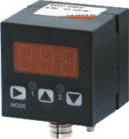

Электрическое соединение. Достоинства Общие характеристики
- Эти устройства корректно работают с соединителем Мод. CS-DF04EG-E500, которые заказываются отдельно.

- Электронный метод измерения давления.
- Два дискретных вывода, пределы срабатывания которых настраиваются отдельно.
- Отображение текущего давления в цифровом виде.
- Настройка давления срабатывания и гистерезиса с клавиатуры.
- Доступны специальные программируемые функции.
Описание
Электронное реле вакуума/давления, поликарбонатный корпус
Реле вакуума с соединителем вакуума с резьбой наружной G 1/8 и внутренней М5.
Реле давления с соединителем вакуума с резьбой наружной G 1/8 и внутренней M5.
- 3 -хзначный цифровой дисплей с клавиатурой для настройки
Встроенные светодиодные индикаторы для наблюдения за состоянием
Подключается через 4-хконтактный разъём М8